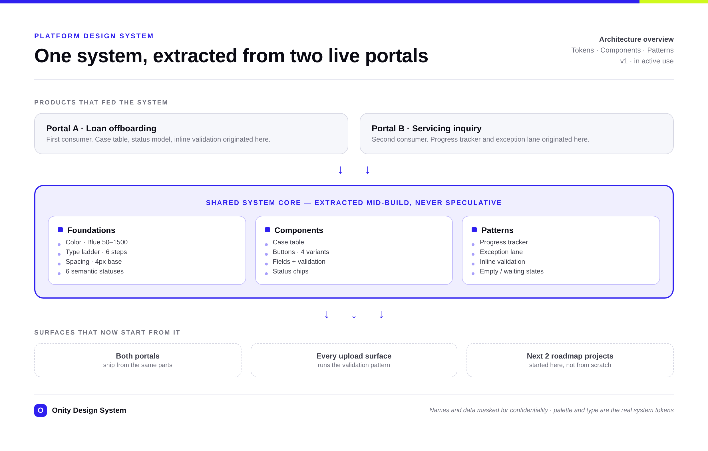
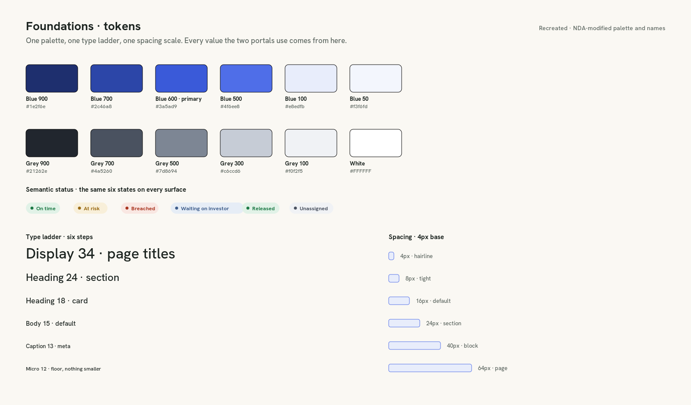
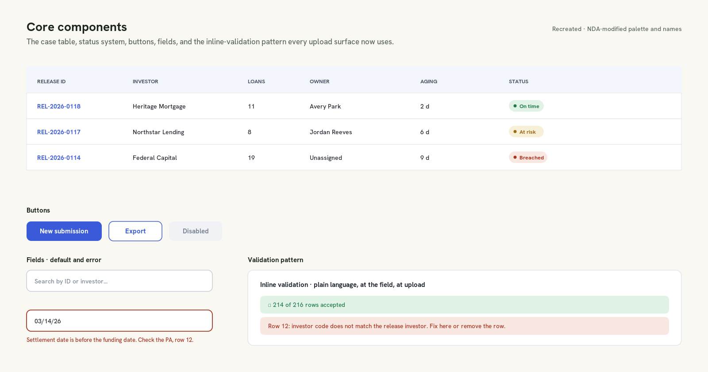
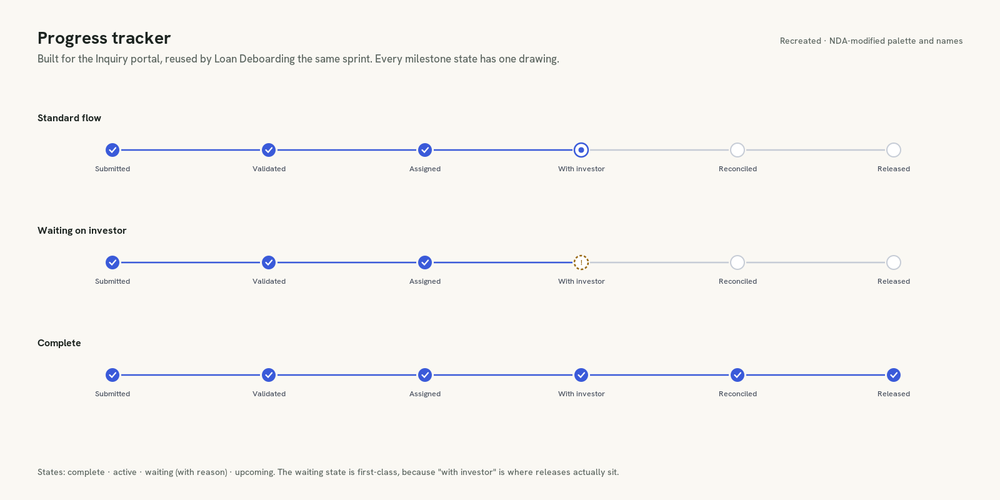
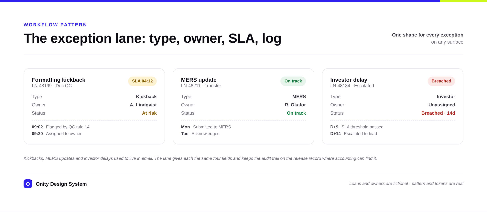

Press Esc or click anywhere to close
Tokens, components, and workflow patterns extracted mid-flight from the platform's first two portals, so every later surface starts from parts instead of a blank file. The case table, the progress tracker, the exception lane, and the inline-validation pattern all live here now.

Senior UX Designersystems owner, sole designer
Onity Grouptwo product squads consuming the system
Ongoingbuilt alongside both portals, 2025 to 2026
Figma · Variables · Librariestokens, components, and pattern documentation
The palette, type scale, and tokens shown here are the real system. I've masked product names, loan data, and screen specifics to respect Onity Group's confidentiality, and rebuilt the sheets to show the system's structure without exposing the products. The decisions and the reuse story are intact. I chose not to password-gate this, since gates only add friction for the people I want to reach. For the real screens and a walkthrough, reach out.
If you only read three paragraphs, read these. Problem, change, and results in about a minute.
Two portals were being designed at once on a platform with no shared parts. Every screen decision was being made twice, drift was already visible between early prototypes, and everything later on the roadmap would have inherited the mess.
I extracted the system from the products instead of designing it upfront. Tokens and a six-step type ladder first, then only the components and workflow patterns the portals proved they needed: the case table, the progress tracker, the exception lane, inline validation.
Both portals ship from the same parts. The four core patterns are documented and reused across the platform, every upload surface runs the inline-validation pattern, and the next two roadmap projects started from this work instead of from scratch.
A system earns trust only when changes are predictable. I owned the core as one source of truth, and the two squads contributed through a path that kept that source from turning random.
Tokens, components, and patterns lived in one library I maintained. One place to change a status color, and one place it changed everywhere.
Product designers raised components straight from real screens. The ones that earned reuse graduated into the library; the rest stayed local, on purpose.
Updates landed in a weekly pass both teams could see, so the system moved forward without anyone waking up to silent drift.
Most of the value was in the parts that never shipped. Deciding what does not exist, and holding that line across two teams, was the actual job.
A system designed before its products is a guess. This one was pulled out of two real portals mid-build, which meant every token and component had already survived contact with actual mortgage workflows.
One palette, a six-step type ladder with a 12px floor, a 4px spacing base, and six semantic statuses. The statuses came straight from the portals: a release is on time, at risk, breached, waiting, released, or unassigned, on every surface, in the same colors.

Nothing entered the library until a portal needed it twice. The case table, status chips, buttons, and fields all graduated from product screens, so the library never grew faster than the platform's real needs.

Components are table stakes. What the platform actually reuses is behavior: how progress reads, how exceptions get owned, how errors get caught at the door. These were designed once, argued over once, and consumed everywhere since.
Built for the Inquiry portal, reused by Loan Deboarding the same sprint. The "waiting on investor" state gets its own drawing, because that is where releases actually sit, and hiding it is how status meetings get born.

Kickbacks, MERS updates, and investor delays used to live in email threads. The lane gives every exception the same four fields on any surface, and the audit trail stays on the release record where accounting can find it.

A library that drifts from the codebase quietly dies. I tracked every core part from Figma to production, with the states and docs that make it safe for a team I am not on to reuse.
| Component | Figma | Code | Docs | Platforms |
|---|---|---|---|---|
| Case table | ✓ | ✓ | ✓ | Web |
| Status chips | ✓ | ✓ | ✓ | Web + desktop |
| Buttons, 4 variants | ✓ | ✓ | ✓ | Web + desktop |
| Fields + validation | ✓ | ✓ | ◐ | Web |
| Progress tracker | ✓ | ✓ | ✓ | Web |
| Exception lane | ✓ | ◐ | ◐ | Web |
Two parts still show a partial. The exception lane's code and the validation docs were mid-flight at the last review, and a parity matrix only works if it is allowed to say "not yet." Showing that honestly is the point.
A design system's only honest metric is whether people who are not its author build with it. The system is in active use; these are the reuse signals so far, stated plainly.
Loan Deboarding and Real-Time Inquiry ship from the same tokens, components, and patterns, with no visual drift between them.
The validation pattern from the Loan portal was adopted for every upload surface on the platform: plain-language errors, caught at the door.
The teams behind the next two platform projects pulled from this library and its research templates instead of starting over.
The engineering-velocity numbers stay inside Onity, so I will not invent a percentage here. Coverage and reuse are what I can show honestly, and they are the signals that actually matter for a system: who builds with the parts, and whether anything drifts when they do.
Components are table stakes now. The system is the judgment around them: what gets consolidated, what gets refused, and what stays true when two teams move at once.The part of the work that did not get cheaper
Two layers of impact that don't show up in a library file. What building it changed about how I work, and what it leaves behind for the platform.
The temptation was to spend a quarter on foundations before either portal drew a screen. Extracting mid-flight was messier, but it meant every pattern had already survived a real workflow before it was named. The system never had to guess what the platform needed; the portals told it.
The clearest sign it works: the parts get used by people who didn't build them. The patterns documented here became the starting point for the platform's next surfaces, and the research templates traveled with them.